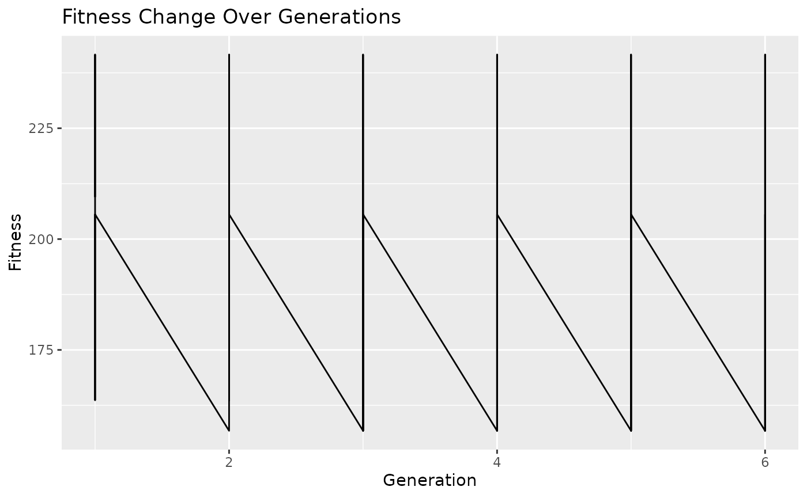

Overview
Overview.RmdOverview
# Load the BioGA package
library(BioGA)
# Define parameters for genetic algorithm
population_size <- 100
generations <- 6
mutation_rate <- 0.1
# Generate example genomic data
genomic_data <- matrix(rnorm(100), nrow = 10, ncol = 10)Genomic data refers to the genetic information stored in an organism’s DNA. It includes the sequence of nucleotides (adenine, thymine, cytosine, and guanine) that make up the DNA molecules. Genomic data can provide valuable insights into various biological processes, such as gene expression, genetic variation, and evolutionary relationships.
Here’s an example of genomic data:
Sample 1 Sample 2 Sample 3 Sample 4
Gene1 0.1 0.2 0.3 0.4
Gene2 1.2 1.3 1.4 1.5
Gene3 2.3 2.2 2.1 2.0In this example, each row represents a gene (or genomic feature), and each column represents a sample. The values in the matrix represent some measurement of gene expression, such as mRNA levels or protein abundance, in each sample.
For instance, the value 0.1 in Sample 1 for Gene1 indicates the expression level of Gene1 in Sample 1. Similarly, the value 2.2 in Sample 2 for Gene3 indicates the expression level of Gene3 in Sample 2.
Genomic data can be used in various analyses, including genetic
association studies, gene expression analysis, and comparative genomics.
In the context of the evaluate_fitness_cpp function,
genomic data is used to calculate fitness scores for individuals in a
population, typically in the context of genetic algorithm
optimization.
# Initialize population
population <- initialize_population_cpp(genomic_data, population_size = 5)The population represents a set of candidate combinations of genes that could be predictive of the trait. Each individual in the population is represented by a binary vector indicating the presence or absence of each gene. For example, an individual in the population might be represented as [1, 0, 1], indicating the presence of Gene1 and Gene3 but the absence of Gene2. The population undergoes genetic algorithm operations such as selection, crossover, mutation, and replacement to evolve towards individuals with higher predictive power for the trait.
# Initialize fitness history
fitness_history <- list()
# Initialize time progress
start_time <- Sys.time()
# Run genetic algorithm optimization
generation <- 0
while (TRUE) {
generation <- generation + 1
# Evaluate fitness
fitness <- evaluate_fitness_cpp(genomic_data, population)
fitness_history[[generation]] <- fitness
# Check termination condition
if (generation==generations) { # defined number of generations
break
}
# Selection
selected_parents <- selection_cpp(population, fitness, num_parents = 2)
# Crossover and Mutation
offspring <- crossover_cpp(selected_parents, offspring_size = 2)
mutated_offspring <- mutation_cpp(offspring, mutation_rate = 0) # (no mutation in this example)
# Replacement
population <- replacement_cpp(population, mutated_offspring, num_to_replace = 1)
# Calculate time progress
elapsed_time <- difftime(Sys.time(), start_time, units = "secs")
# Print time progress
cat("\rGeneration:", generation, "- Elapsed Time:", format(elapsed_time, units = "secs"), " ")
}
#>
Generation: 1 - Elapsed Time: 0.02746749 secs
Generation: 2 - Elapsed Time: 0.0282979 secs
Generation: 3 - Elapsed Time: 0.02839375 secs
Generation: 4 - Elapsed Time: 0.02847576 secs
Generation: 5 - Elapsed Time: 0.02855492 secsThe fitness calculation described in the provided code calculates a measure of dissimilarity between the gene expression profiles of individuals in the population and the genomic data. This measure of dissimilarity, or “fitness”, quantifies how well the gene expression profile of an individual matches the genomic data.
Mathematically, the fitness calculation can be represented as follows:
Let:
\(g_{ijk}\) be the gene expression level of gene \(j\) in individual \(i\) and sample \(k\) from the genomic data.
\(p_{ij}\) be the gene expression level of gene \(j\) in individual \(i\) from the population.
\(N\) be the number of individuals in the population.
\(G\) be the number of genes.
\(S\) be the number of samples.
Then, the fitness \(F_i\) for individual \(i\) in the population can be calculated as the sum of squared differences between the gene expression levels of individual \(i\) and the corresponding gene expression levels in the genomic data, across all genes and samples:
\[ F_i = \sum_{j=1}^{G} \sum_{k=1}^{S} (g_{ijk} - p_{ij})^2 \]
This fitness calculation aims to minimize the overall dissimilarity between the gene expression profiles of individuals in the population and the genomic data. Individuals with lower fitness scores are considered to have gene expression profiles that are more similar to the genomic data and are therefore more likely to be selected for further optimization in the genetic algorithm.
# Plot fitness change over generations
plot_fitness_history(fitness_history)